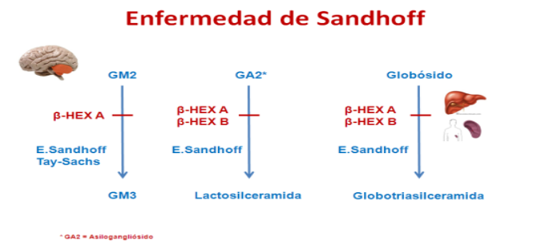
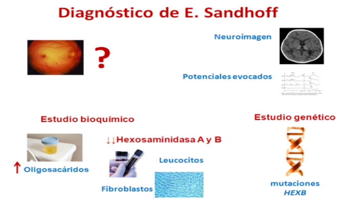

Enfermedad de Sandhoff
¿Qué es la Enfermedad de Sandhoff?
Es una enfermedad lisosomal del grupo de los Gangliosidosis GM2, en la que existe un defecto de actividad de las Hexosaminidasas A y B, causada por mutaciones en el gen HEXB que codifica la subunidad β que comparten ambas enzimas.
¿Qué es un gangliósidos?
Existen diversos gangliósidos, entre ellos GM1, GM2 y GM3, que se diferencian por su composición en azúcares. Su degradación requiere diferentes enzimas,cuya deficiente actividad causa la acumulación de compuestos parcialmente degradados que se acumulan en el sistema nervioso especialmente, causando las Gangliosidosis Son lípidos complejos que se localizan especialmente en el cerebro. Son esenciales para la mielinización, para la integridad de los axones neuronales y para la transmisión del impulso nervioso
¿Cómo se degrada el gangliósidos GM2?
El gangliósidos GM2 necesita la enzima Hexosaminidasa A y una proteína activadora para degradarse. La Hexosaminidasa A está formada por dos subunidades (α y β), mientras que la Hexosaminidasa B está formada solo por subunidades β. Si se producen mutaciones en el gen que codifica la subunidad β, se produce un defecto de actividad de ambas Hexosaminidasas A y B, que comparten dicha subunidad.
¿Qué ocurre si se produce un defecto de ambas Hexosaminidasas?
Cuando existe un defecto enzimático de la enzima Hexosaminidasa A, los gangliósidos no pueden degradarse y se acumulan en el lisosoma de la célula formando unos corpúsculos que además contienen colesterol y fosfolípidos y que acaban lesionando gravemente las neuronas (células del sistema nervioso).
Por tanto, estos acúmulos producen lesión especialmente en el sistema nervioso central.
La Hexosaminidasa B interviene en la degradación de mucopolisacáridos, oligosacáridos y del globósido. El defecto de la subunidad β de Hexosaminidasa, impide así, no solo la degradación de GM2, si no que también interfiere en la de otros glicolípidos con el mismo azúcar terminal que los gangliósidos (globósido), que se acumulan en otros tejidos, especialmente riñones, hígado y bazo.
Se produce además un acúmulo de oligosacáridos que se excretan en orina, siendo una herramienta muy útil para el diagnóstico de esta enfermedad.
¿Qué ocurre en el caso de un niño/a que nace con una Enfermedad de Sandhoff?
El niño/a va a desarrollar antes o después síntomas neurológicos. Pueden manifestarse, según el grado de defecto enzimático, en los primeros meses de vida, en la etapa infantil/niñez o en la etapa juvenil/adulta.
La forma Clásica Infantil suele iniciarse entre los 4-8 meses de vida con deterioro neurológico por el que los padres observan una pérdida de los Hitos del Desarrollo adquiridos previamente (los hitos del desarrollo son las habilidades o movimientos que van "aprendiendo" los lactantes normales como sentarse, gatear, tomar objetos, pasarlos de mano, balbucear…).
Presentan una debilidad muscular a la que se añadirán signos de espasticidad (Signo clínico en el que algunos músculos se mantienen contraídos, causando la rigidez y el acortamiento de los mismos e interfiriendo en sus funciones.).
Un hallazgo típico es la respuesta motora exagerada a estímulos auditivos. Los niños pierden el interés por el juego y con el tiempo desarrollan una macrocefalia (aumento del perímetro craneal), así como crisis epilépticas en algunos casos.
Al realizarles un fondo de ojo a estos pacientes se puede encontrar una mancha color rojo cereza en la mácula que ayuda a la sospecha clínica que posee esta enfermedad, pero que se puede también encontrar en otras enfermedades lisosomales. Esta mancha puede condicionar una ceguera.
Ocasionalmente pueden presentar facies tosca, ligera hepatoesplenomegalia (agrandamiento del hígado y bazo) y algunas deformaciones óseas.
En la forma infantil tardía el inicio de los síntomas suele tener lugar entre los 2 y los 10 años y se debe a un defecto enzimático parcial. En este caso los pacientes desarrollan dificultades para hablar (disartria), para caminar (ataxia), así como una atrofia cerebelosa progresiva, que se desarrolla de una forma mucho más lenta que en los lactantes.
En la forma juvenil/adulta, donde el defecto enzimático es menor y se pueden presentar a partir de los 10 años con problemas de estabilidad de la marcha (ataxia), temblor, movimientos anormales (distonía, coreoatetosis).
¿Cómo se diagnostica un paciente con Enfermedad de Sandhoff?
El diagnóstico se sospecha por los datos clínicos (signos y síntomas), el fondo de ojo (mancha rojo cereza), la neuroimagen (afectación de sustancia blanca, alteración en la señal de los ganglios de la base y especialmente en tálamos), y muy especialmente analizando la excreción de oligosacáridos en orina.
El diagnóstico se confirma midiendo la actividad de Hexosaminidasa A y B en leucocitos (glóbulos blancos de la sangre) o cultivo de fibroblastos. Finalmente se realiza el estudio genético del gen HEXB.
¿Qué podemos hacer para evitar las consecuencias de una Enfermedad de Sandhoff?
Hay que diagnosticar lo más precozmente la enfermedad, efectuar estudio de familiares portadores, ofrecer consejo genético a la familia y la posibilidad de diagnóstico prenatal en otra futura gestación.
No hay muchas opciones terapéuticas efectivas en la forma clásica infantil, aunque se esta trabajando en la Terapia enzimática sustitutiva.
En las formas juveniles y del adulto que tienen una evolución más benigna también se están ensayando terapias de inhibición de sustrato y algunos pacientes han sido intervenidos favorablemente de trasplante de médula ósea.
En todos los casos se pueden aplicar las medidas y cuidados del paciente en función de la sintomatología clínica que manifieste (fisioterapia, anticonvulsivos, antibióticos, medidas posturales, etc), para mejorar la calidad de vida del paciente.
La Enfermedad de Sandhoff por deficiencia de hexosaminidasa A y B es una enfermedad grave del sistema nervioso que conlleva consecuencias graves e irreversibles para quien la padece. Son notables las expectativas puestas en la terapia enzimática sustitutiva.